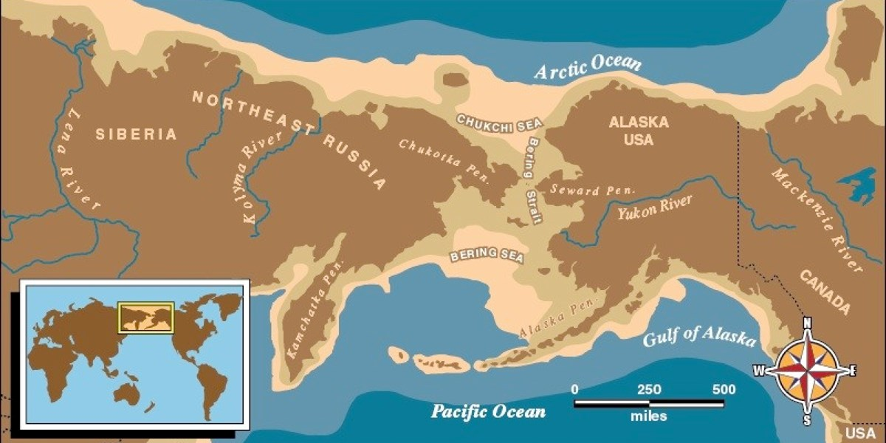
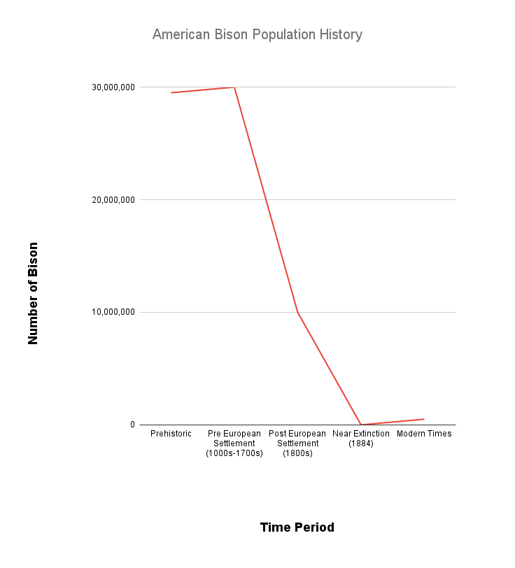
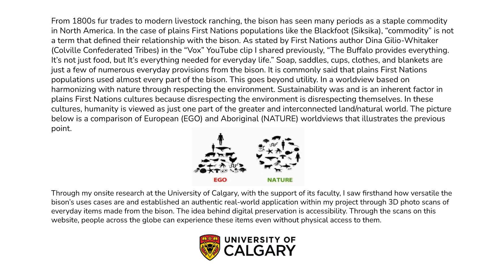
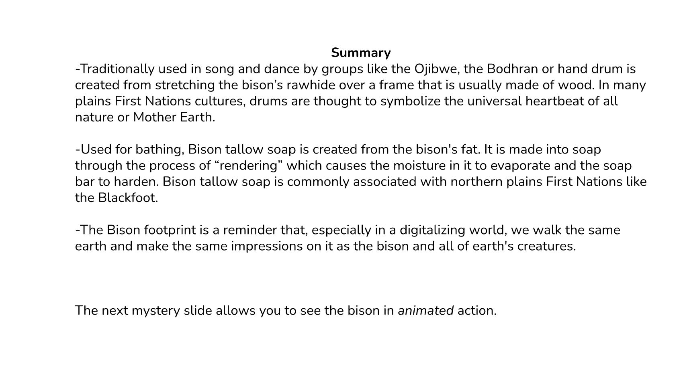
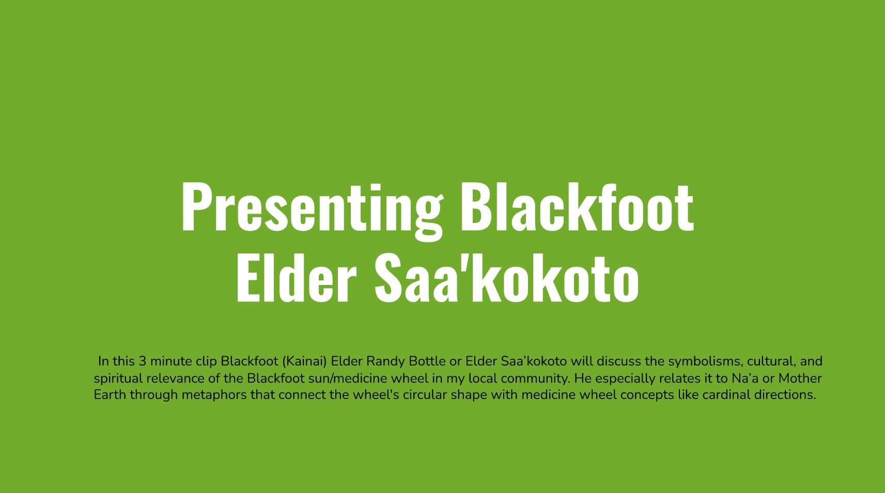
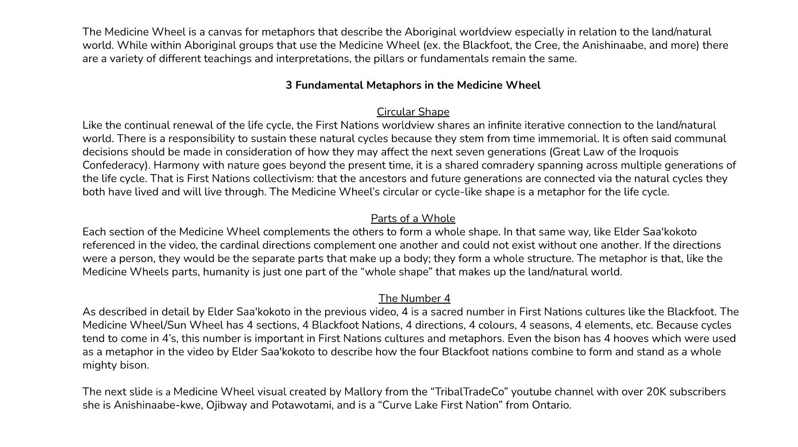
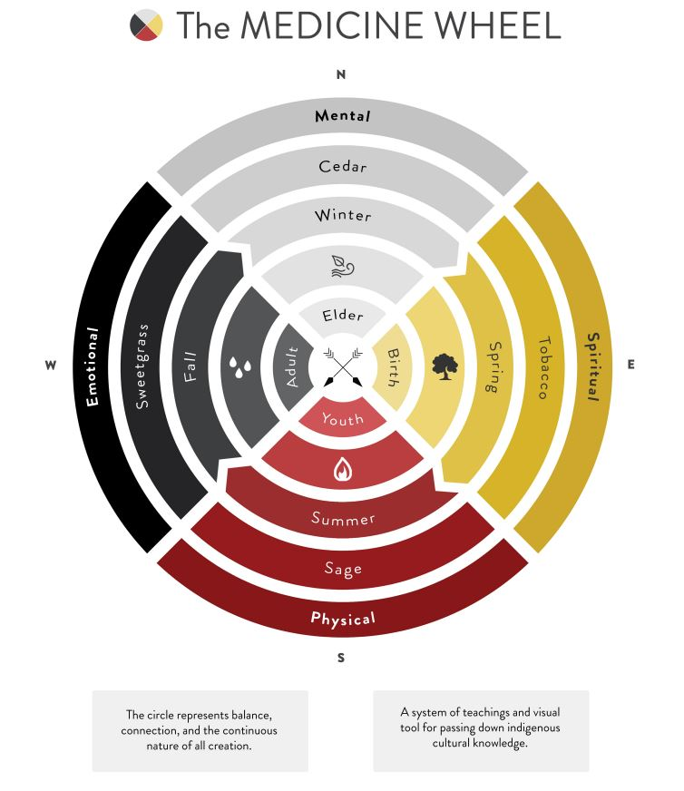
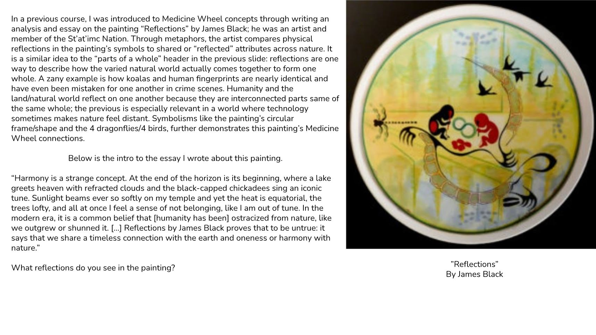

They are hypothesized to have come through a land bridge connecting Asia and North America
when water levels were very low.

Click through the timeline to learn more

...there is a long road to travel in restoring these populations to more of their former glory.

Photos before being processed
Drag and scroll to interact with the items
A Bodhran (hand drum) made from the bison's rawhide
Bison tallow soap (rendered bison fat)
A real and detailed bison footprint

Part 2

The Medicine Wheel



yellow stone and rancher guys and modern ways in which the bison is handled and harmony still happens
bison legislation (limit on hunting and permits for example)
Thank the audiance for watching and looking through

 yellow stone and rancher guys and modern ways in which the bison is handled and harmony still happens
yellow stone and rancher guys and modern ways in which the bison is handled and harmony still happens